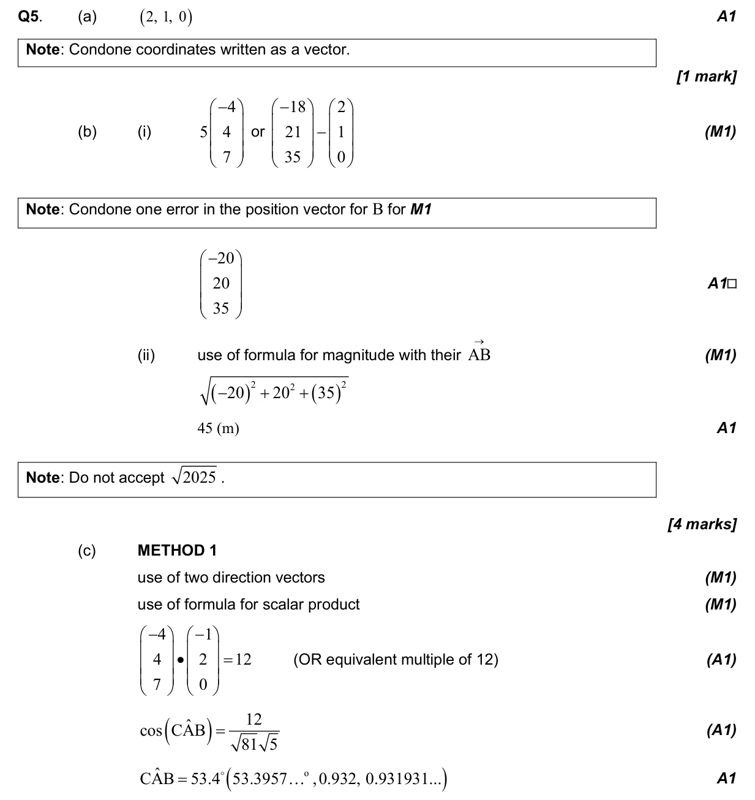
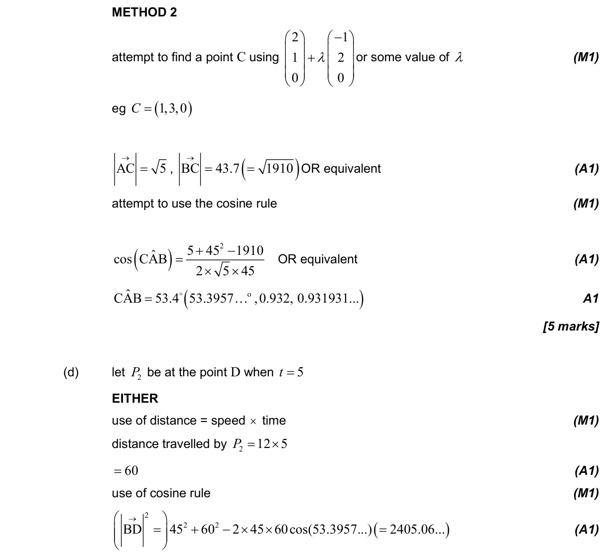
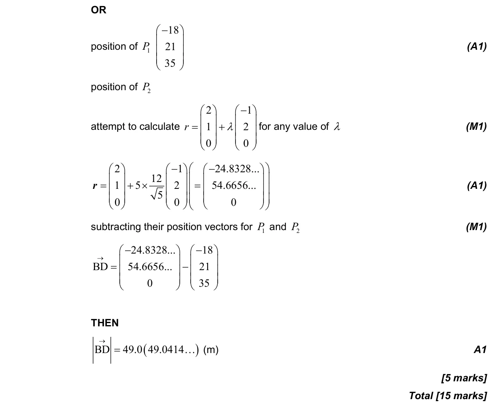

15 marks P2 TZ3 Calculator 3.12 Vector kinematics3.13 Scalar and vector products3.2 2D and 3D trigonometry, sine rule, cosine rule and area3.10 Vectors and scalars: representation and components Question Hide breakdown abcd Markscheme 